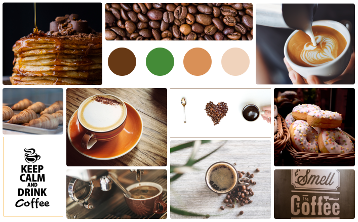

Grind Coffee - IOS APP
COFFEE SHOP
Working on a coffee ordering app.

After organizing the information architecture, I designed a moodboard to generate a visual brainstorming that helped me determine shape, color, tone and illustrations as a guide.

Keep your preferences active to make your order easy and fast! Customize the coffee as much as you want.
Have a coffe first, then go have a good day! You can have them deliver the coffee to your location or set a time to go pick up the coffee.

Very simple but useful design.